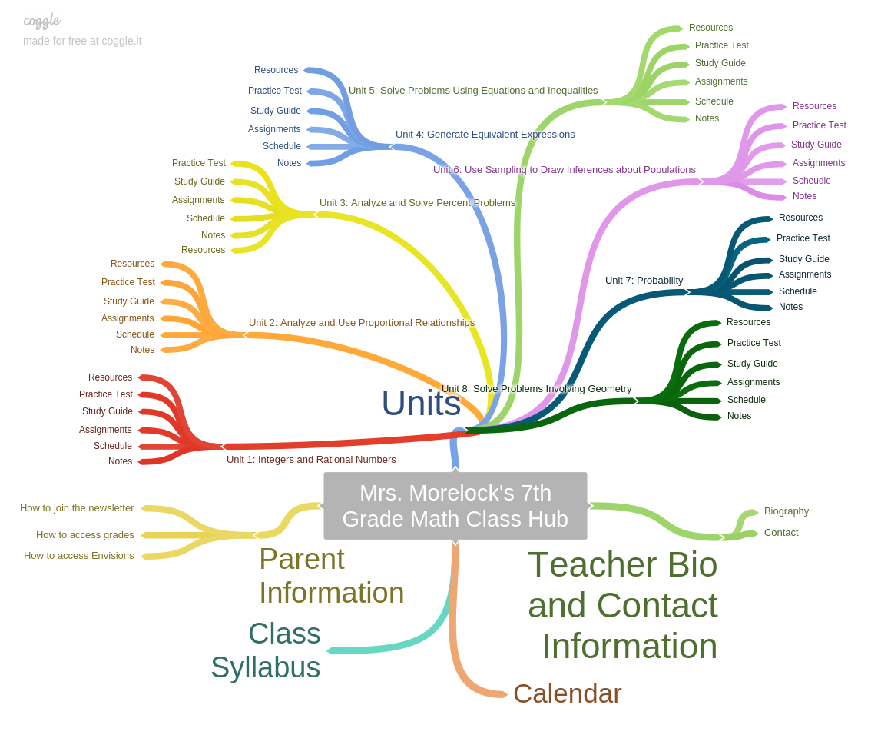

The purpose of this web site is to create a central location or “hub” for my 7th grade math class. The website will provide all schedules, resources, assignments, and lessons for my students as well as parents. Students will visit this site daily for information pertaining to class. They will be able to find all information in one spot instead of having to go to shared drives, google classroom, email, etc. to find what they need for class. Parents can also go to the web site to be informed on what is going on in class or how to use technology such as gradebook.
Use Case 1 : Review Schedule
Actor: Student
At any time during the course a student wants to look at the calendar to know what is coming up in class.
She goes to the web site and selects the unit she would like to look at the schedule for.
Once on the unit page, she can select the schedule. The student will look through the assignments, quizzes,
tests, etc. on the schedule for the unit to know when events are happening throughout the unit.
Alternate Flow 1: The student chooses calendar on the main page and looks through specific days
when events are happening through multiple units.
Use Case 2: Find Resources
Actor: Student
At any time during the course a student wants to find information on the topic being
studied in class. The student will go to the current unit and from there may select,
assignments, study guides, practice tests, notes, or additional resources.
The student will select additional resources and choose a link.
Alternate Flow 1: The student chooses assignments and goes to a list of
assignments that they will then complete or rework.
Alternate Flow 2: The student chooses study guides and works through a study
guide that covers all material from the unit
Alternate Flow 3: The student chooses practice tests and will work through
an example of a test for the unit.
Alternate Flow 4: The student chooses notes and goes back through lessons
that have already been taught.
Use Case 3: Student Absence
Actor: Student
A student misses school but wants to complete the lesson at home so they are not
behind when they return. The student goes to the main page and chooses the link to
the unit they are on. The student then goes into the notes section and finds the
specific topic. The student will go through the lesson. The student will then go
back to the unit page and go to assignments.
The student will complete any assignments they have missed for the day.
Alternate Flow 1: The student goes to the calendar on the main page and
looks on the day they are absent. The calendar will list specifically what
was completed on the day.
The student can then follow the links within the calendar to the pages.
Audience
The audience for my website will primarily be 7th grade math students,
both male and female. These students are enrolled in the Platte County
R-III School District, specifically Barry Middle School. Barry Middle School
is a 5-8 school that is in suburban Kansas City, Missouri. The students who
will be using the website are all given Chromebooks at the start of the school
year to use both at school and at home. They have used them for several years
and have a good understanding of the abilities and functions of the tool.
Survey
I asked 5 7th grade students, both male and female, from different classes, a survey. I explained what the website was about
and to answer the questions as if they would be getting the website. These are the questions and responses.
Reference Websites
Content Synopsis
The content on my site will be divided into four areas
Text Outline
I.Main Page
A.Units – This page will have links to all 8 units
1.Integers and Rational Numbers
a.Resources – Links for the students to find more information on the unit
b.Practice Test – A practice test for students to check their understanding of the material (This will be a google form)
c.Study Guide – A list of material that students will need to understand for the unit as well as practice problems
d.Assignments – A list of all assignments for the unit
e.Schedule – A schedule of important dates for the unit, due dates, test dates, presentation dates, etc.
f.Notes – Slides for the topics of the unit
2.Analyze and Use Proportional Relationships
a.Resources – Links for the students to find more information on the unit
b.Practice Test – A practice test for students to check their understanding of the material (This will be a google form)
c.Study Guide – A list of material that students will need to understand for the unit as well as practice problems
d.Assignments – A list of all assignments for the unit
e.Schedule – A schedule of important dates for the unit, due dates, test dates, presentation dates, etc.
f.Notes – Slides for the topics of the unit
3.Analyze and Solve Percent Problems
a.Resources – Links for the students to find more information on the unit
b.Practice Test – A practice test for students to check their understanding of the material (This will be a google form)
c.Study Guide – A list of material that students will need to understand for the unit as well as practice problems
d.Assignments – A list of all assignments for the unit
e.Schedule – A schedule of important dates for the unit, due dates, test dates, presentation dates, etc.
f.Notes – Slides for the topics of the unit
4.Generate Equivalent Expressions
a.Resources – Links for the students to find more information on the unit
b.Practice Test – A practice test for students to check their understanding of the material (This will be a google form)
c.Study Guide – A list of material that students will need to understand for the unit as well as practice problems
d.Assignments – A list of all assignments for the unit
e.Schedule – A schedule of important dates for the unit, due dates, test dates, presentation dates, etc.
f.Notes – Slides for the topics of the unit
5.Solve Problems Using Equations and Inequalities
a.Resources – Links for the students to find more information on the unit
b.Practice Test – A practice test for students to check their understanding of the material (This will be a google form)
c.Study Guide – A list of material that students will need to understand for the unit as well as practice problems
d.Assignments – A list of all assignments for the unit
e.Schedule – A schedule of important dates for the unit, due dates, test dates, presentation dates, etc.
f.Notes – Slides for the topics of the unit
6.Use Sampling to Draw Inferences About Populations
a.Resources – Links for the students to find more information on the unit
b.Practice Test – A practice test for students to check their understanding of the material (This will be a google form)
c.Study Guide – A list of material that students will need to understand for the unit as well as practice problems
d.Assignments – A list of all assignments for the unit
e.Schedule – A schedule of important dates for the unit, due dates, test dates, presentation dates, etc.
f.Notes – Slides for the topics of the unit
7.Probability
a.Resources – Links for the students to find more information on the unit
b..Practice Test – A practice test for students to check their understanding of the material (This will be a google form)
c.Study Guide – A list of material that students will need to understand for the unit as well as practice problems
d.Assignments – A list of all assignments for the unit
e.Schedule – A schedule of important dates for the unit, due dates, test dates, presentation dates, etc.
f.Notes – Slides for the topics of the unit
8.Solve Problems Involving Geometry
a.Resources – Links for the students to find more information on the unit
b.Practice Test – A practice test for students to check their understanding of the material (This will be a google form)
c.Study Guide – A list of material that students will need to understand for the unit as well as practice problems
d.Assignments – A list of all assignments for the unit
e.Schedule – A schedule of important dates for the unit, due dates, test dates, presentation dates, etc.
f.Notes – Slides for the topics of the unit
B.Bio/Contact – This page will have links to information on the teacher and how to contact them
1.Biography – A description of the teacher, their education, and philosophies
2.Contact – How to contact the teacher
C.Syllabus – This page links to a copy of the syllabus
D.Calendar – This page links to a calendar with all important course and school dates
E.Parent information – This page links to a page that has information for parents
1.How to access grades
2.How to access Envisions
3.How to join the newsletter
Rational for Organization
This website is organized in a way that follows the flow of the course.
Each unit link contains the information for that unit. There are also
main page links that make it easy to find what you are looking for. The
students will be able to find information they need and the parents “How to”
links are all in one location. Even if a parent needs information from the
student pages, they can use the calendar to find what unit they need to navigate too.
Wireframe

This website will include:
Videos
I will create all videos for the parent how to page, and the student resources.
The videos will be used to show parents how to access material they might want to see in
regard to their students. The videos for the students will be used to help them better understand
the material for the unit.
Images
All images will either be created by myself or will be used through creative commons and
credited as requested by the creator. Images will be used to further assist students in the
understanding of the material. The image / logo on the header of the pages will be created by myself.
Forms
There will be forms that are imbedded into the website, those will be created by myself. The forms
are used to assist students in assessing their own understanding of each unit.
The color scheme of my page will consist of oranges, blacks, greys, and whites. The reasoning behind this
is that those are the colors of our school and all school websites share a similar color scheme. This page is an
example of how my color scheme will look.
Headers, footers, and navigation bars will be orange with black writing
The main background will be white with black writing
Main Headings will be black with orange writing.